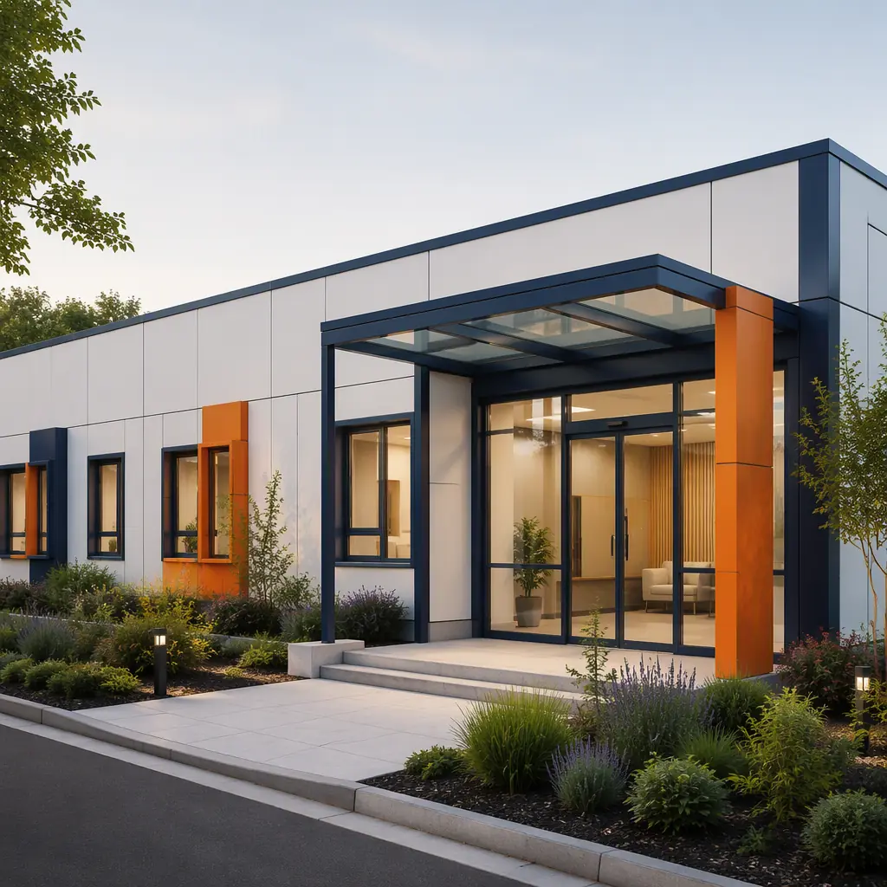
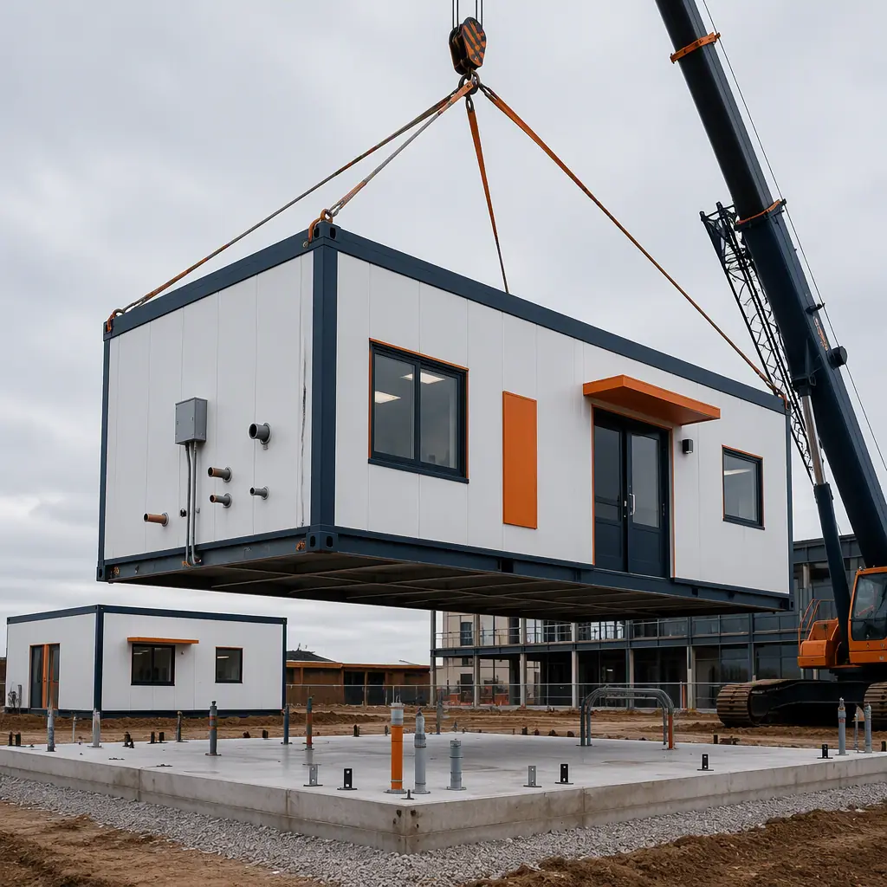
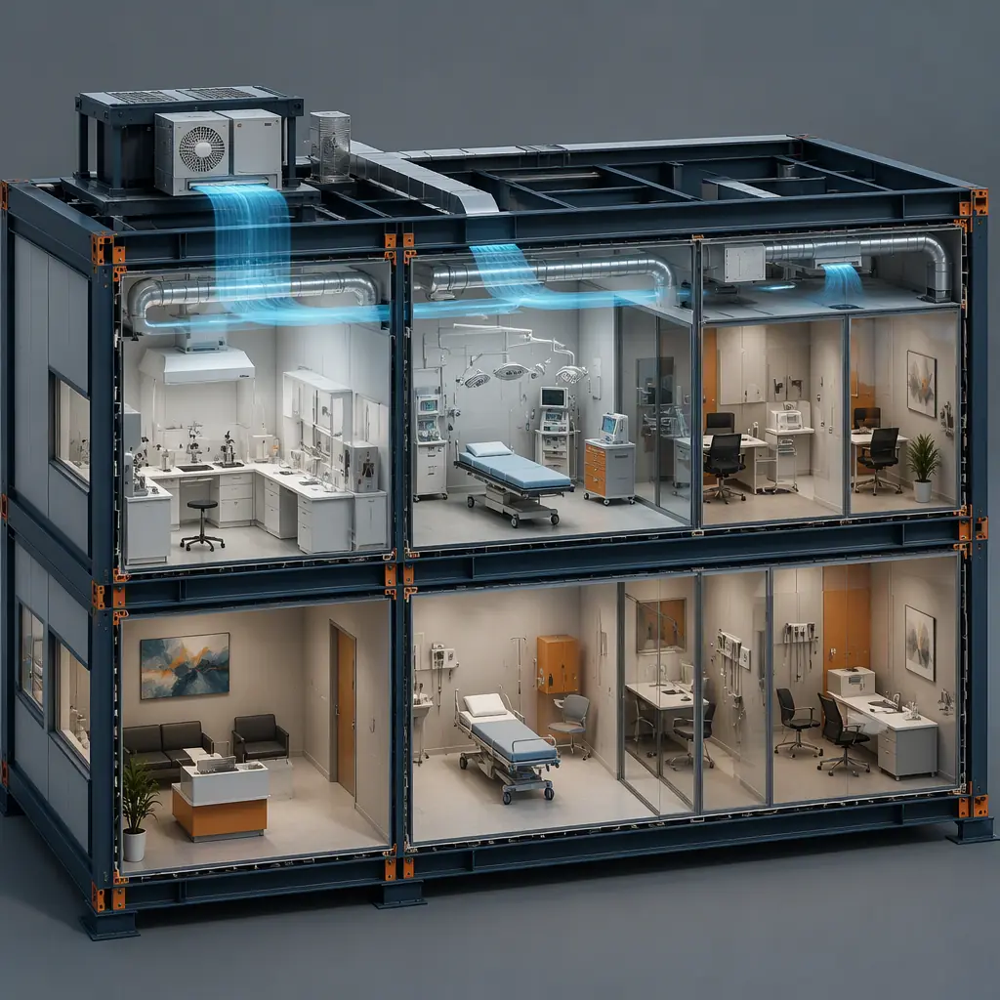
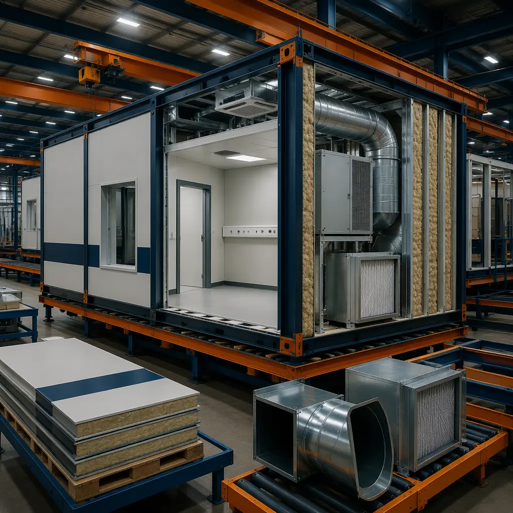

Fertility clinics are among the most technically demanding outpatient facilities built today — and among the most schedule-sensitive. An in vitro fertilization (IVF) center pairs a conventional medical office program with an embryology laboratory whose environmental requirements rival semiconductor fabrication: ISO Class 5–7 air, volatile organic compound (VOC) control, vibration limits, and redundant power. In the United States, the number of IVF cycles performed annually has grown to roughly 400,000, and clinic operators expanding to meet demand face a building program that most general contractors have never delivered. Modular prefabricated construction is a natural fit: the embryology lab, procedure suites, and recovery areas can be factory-built with the HVAC, filtration, and MEP systems installed, tested, and documented before they ever reach the site — compressing a 14–18 month conventional medical build into 8–12 months. This guide covers the module package, the environmental engineering that makes or breaks an embryology lab, and the compliance path for a modular fertility clinic. For the broader outpatient building pattern, see our modular medical clinic construction guide.

The Fertility Clinic Building Program
A typical fertility clinic spans 8,000–20,000 sq ft and divides into four functional zones, each with different environmental and MEP demands:
- Embryology laboratory (the technical core). The lab houses incubators, micromanipulation stations, and storage tanks — equipment that demands ISO Class 5–7 particulate air, tight temperature control (37°C incubation environments), low VOC off-gassing, and minimal vibration. It is typically 1,200–2,500 sq ft in a single- or multi-clinic operation.
- Procedure and retrieval suites. Egg retrieval and embryo transfer suites are minor procedure rooms with anesthesia support — medical gas, suction, monitoring, and post-anesthesia care. These follow the same clinical engineering pattern as modular dialysis centers, with specialized MEP intensity in a compact footprint.
- Consultation and diagnostic areas. Exam rooms, ultrasound suites, and consultation offices form the patient-facing program — conventional medical office space with acoustic privacy and patient flow requirements.
- Laboratory support and storage. Media preparation rooms, cryostorage (liquid nitrogen tanks), and equipment rooms need dedicated ventilation, spill containment, and alarm integration.

Why Embryology Labs Drive the Modular Decision
The embryology laboratory is the reason fertility clinics are disproportionately good modular candidates. Its environmental requirements — HEPA filtration, positive pressure, VOC control, vibration isolation, and uninterruptible power — are exactly the systems that modular factories build most reliably, because they are installed and validated in a controlled environment rather than on a crowded site:
- Air quality is the clinical differentiator. Studies of IVF outcomes consistently associate lab air quality with embryo development and pregnancy rates; professional guidelines from the American Society for Reproductive Medicine (ASRM) recommend HEPA filtration and VOC management in embryology labs. Modular labs are built with the filtration train — pre-filters, HEPA banks, carbon scrubbing for VOCs — factory-installed and tested, with particulate counts documented before shipment. This is the same clean-air engineering discipline covered in modular cleanroom construction.
- Vibration and acoustic isolation are engineered at the module level. Incubators and micromanipulators are sensitive to footfall and HVAC vibration. Modular steel frames with damped floor cassettes and isolated HVAC mounts control vibration at the source, and the factory can test the assembled module before delivery — something impossible in field-built clean space.
- Redundant power is a factory-standard option. IVF labs cannot tolerate incubator power loss. Modular electrical rooms with automatic transfer switches, generator provisions, and battery-backed alarm systems are factory-integrated, and the redundancy architecture is documented in the MEP package. The power-dense building pattern parallels modular edge data center construction.
- Commissioning is compressed. A field-built lab's certification — particle counts, pressure differentials, airflow balance — takes weeks of iterative adjustment. A modular lab arrives with factory test reports, so site certification is verification rather than discovery. The testing sequence is covered in our building commissioning and handover guide.

The Module Package for a Fertility Clinic
A modular fertility clinic is assembled from a coordinated set of factory-built modules, each sized to road transport (typically 12–16 ft wide, up to 60 ft long) and set in a single crane schedule:
Embryology Lab Module
The lab module — 1,200–2,500 sq ft in one or two linked modules — arrives with the full clean-air train installed: HEPA-filtered supply, VOC-scrubbed air, positive pressure relative to corridors, and temperature-stable conditioning. Benching, gas supply (CO₂ and N₂ distribution to incubator positions), and alarm wiring are factory-installed, so the lab's certification work starts the week the module lands. The clean-space construction pattern is detailed in our cleanroom guide.
Procedure and Recovery Modules
Retrieval suites and recovery bays arrive with medical gas manifolds, anesthesia scavenging, suction, and monitoring infrastructure pre-installed and pressure-tested. Because these are minor procedure rooms rather than full operating rooms, they follow the ambulatory pattern documented in modular community health center construction, with the MEP intensity of a procedure suite in a factory-built envelope.
Consultation, Ultrasound, and Patient-Facing Modules
The patient-facing program — exam rooms, ultrasound suites, consult offices, and waiting areas — is delivered as standard medical office modules with acoustic detailing and patient-flow layouts factory-built. The overall outpatient pattern is covered in modular outpatient clinic construction.
Support and Infrastructure Modules
Cryostorage rooms with liquid nitrogen tank ventilation, media preparation rooms, and central plant modules (HVAC, electrical, medical gas) complete the package. These are factory-built to the same standard as the clinical modules, with spill containment and alarm integration pre-wired.

Compliance — CAP, CLIA, and State Licensing
Fertility clinics operate under a compliance stack that shapes the building itself. The embryology laboratory may seek College of American Pathologists (CAP) accreditation and CLIA certification, both of which audit environmental controls, air quality, and documented processes; many states also license fertility clinics directly. Modular delivery supports these audits with factory-generated documentation — filter certifications, particulate test reports, pressure differential logs, and MEP as-builts — assembled into a commissioning file that the surveyor reviews alongside the clinical protocols. The documentation discipline is the same one we detail for factory quality control systems, and the state-by-state healthcare approval path is covered in our permitting and zoning guide.
Cost Structure — Modular vs. Conventional Fertility Clinic Build
| Cost Category | Conventional (12,000 sq ft Clinic) | Modular (12,000 sq ft Clinic) |
|---|---|---|
| Shell & core (structure, envelope, interiors) | $2.2–3.4M | $1.8–2.7M (factory-built) |
| Embryology lab clean-air systems (HVAC, HEPA, VOC) | $0.7–1.3M | $0.55–1.0M (factory-validated) |
| Medical gas, procedure suite MEP, redundancy | $0.8–1.4M | $0.6–1.1M (factory-tested) |
| Field labor, certification & schedule risk | $0.9–1.5M | $0.4–0.7M |
| Total Building Cost | $4.6–7.6M | $3.35–5.5M |
The 15–28% building cost reduction compounds with 4–6 months of earlier operation — material for a clinic where every month of delay postpones revenue and patient access. For a full treatment of medical project economics, see our hospital construction cost breakdown and 2026 modular cost guide.
HVAC & Air Quality Engineering for the Embryology Lab
The mechanical system is where fertility clinic construction succeeds or fails, and it is the reason modular delivery is so well suited to the building type. The embryology lab's HVAC design starts with a dedicated air-handling unit — not shared with the clinic's patient areas — delivering 100% outside air or high-efficiency recirculation through a filtration train that removes both particulates and volatile organic compounds. The ASRM's guidelines and the European Society of Human Reproduction and Embryology (ESHRE) guidance both emphasize minimizing VOCs, which off-gas from paints, adhesives, and casework; modular labs control this at the factory by using low-VOC materials throughout and by conditioning the assembled module before shipment. The result is a lab whose air quality is verified by particle counts and VOC measurements taken in the factory, not discovered during on-site certification. The clean-air engineering discipline is the same one we document in modular cleanroom construction, and the temperature-stability requirements — incubators hold embryos at 37°C with narrow tolerances — drive the redundant cooling and alarm design that factory-built mechanical rooms deliver as standard.
Pressure relationships matter as much as filtration. The lab is kept positive relative to surrounding corridors so that unfiltered air never flows into the clean space, while procedure and recovery areas use neutral or slightly negative pressure to contain any airborne contaminants from patient care. Modular construction implements these pressure cascades with factory-set damper positions and tested airflow balancing, and each module's mechanical room arrives with the control system pre-commissioned. Because the entire sequence — filtration, pressure, temperature, and alarm integration — is engineered as one system at the factory rather than assembled from field trades, the certification phase shrinks from weeks of adjustment to days of verification. The commissioning and documentation sequence is covered in our commissioning and handover guide, and the power-redundancy architecture that protects incubators is detailed in modular edge data center construction.
Expansion and Multi-Site Fertility Networks
Fertility networks — operators running five, ten, or twenty clinics across regions — are the strongest modular fit. The embryology lab module design, once engineered and certified, can be replicated across sites with the same test documentation, cutting design and certification time per location by 50–70% and standardizing lab protocols, equipment layouts, and staff training. Networks also expand incrementally: a clinic opens with one lab module and procedure suite, then adds a second lab or additional consultation modules as cycle volume grows — the phasing pattern documented in modular building additions and expansions. The multi-site financing structures in our lending guide apply directly to network rollouts.
Is Modular Right for Your Fertility Clinic?
Modular delivery delivers the strongest value for fertility clinics with a firm opening date — hiring cycles, lease obligations, and patient waitlists all depend on it — for lab-heavy programs where the clean-air systems benefit from factory validation, and for multi-site networks where replication amortizes the engineering investment. For a single clinic with an unusually flexible schedule, the planning overhead is heavier; for everything else, factory-built delivery converts the project's hardest technical requirements — air quality, redundancy, and certification — into manufactured, tested, documented systems. The result is a fertility clinic that opens on schedule with a laboratory already proven to clinical standards — consistent with the healthcare delivery model we document across modular healthcare facility construction.